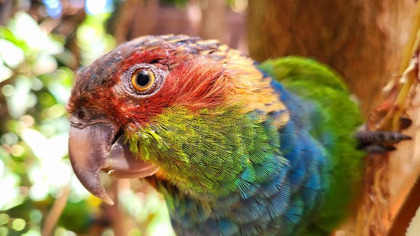
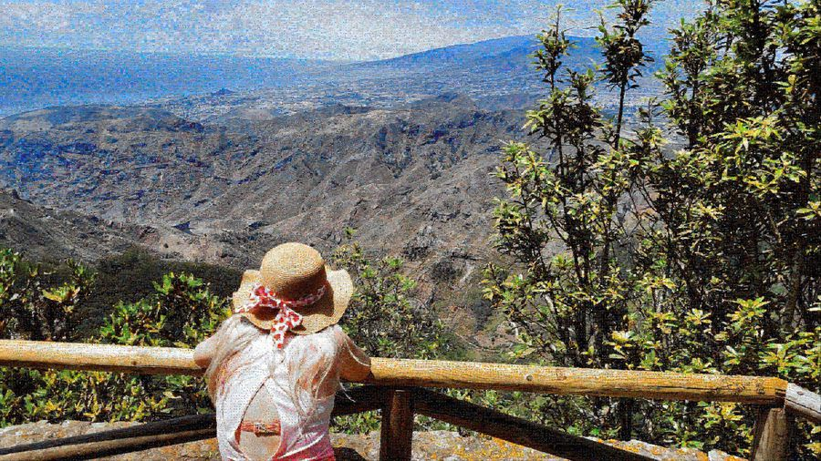
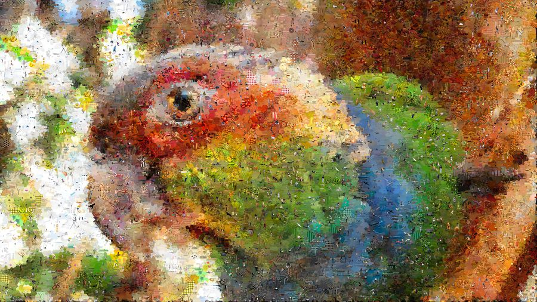
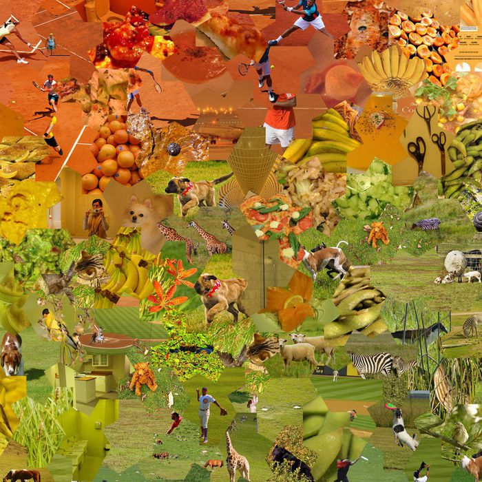
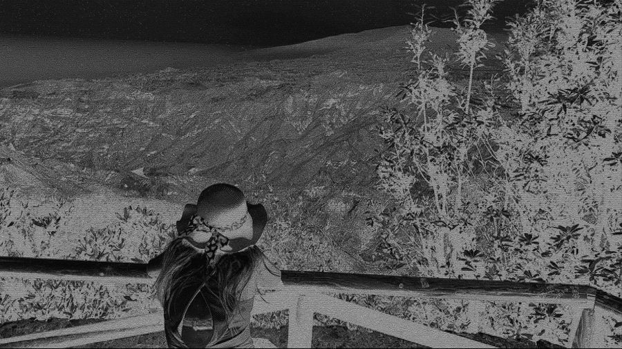

What it does
A photomosaic works by dividing a target picture into cells and filling each one with the library image whose colour best matches that part of the target. Step back and you see the original photograph; step in and it dissolves into hundreds of thousands of individual pictures. Neural-Mosaic does this at print resolution and gives you control over the two things most mosaic tools fix for you: the geometry of the cells and the material they are made of.
- Max output16K · 133 MP
- Tilings50 geometries
- Matching5×5 CIELAB
- LicenceMIT · free
Gallery
Three 16K showcases and two 8K renders are hosted as deep-zoom pyramids you can explore in the browser — zoom continuously from the whole picture down to one tile.





How the matching works
Every library image is reduced to a 5×5 grid of CIELAB colour means — a 75-dimensional fingerprint. CIELAB is used rather than RGB because distance in that space tracks how different two colours look to a human eye, not how far apart their numbers happen to be. Matching a cell is then a nearest-neighbour query in 75 dimensions, answered with a k-d tree over the whole library.
Using a 5×5 grid rather than one average colour matters: a tile is chosen because its internal layout of light and dark agrees with that part of the target, so edges and gradients running through a cell survive instead of being flattened into a single block of colour. An optional edge-aware mode extends the fingerprint to 79 dimensions with gradient information for targets with strong linework.
Picking the single closest tile everywhere would produce visible clumps of the same photograph, so the engine scores the top candidates against a repetition penalty and forbids any tile already used by a spatial neighbour. For non-rectangular cells the score is additionally weighted by how much of each 5×5 patch actually falls inside the tile's mask — a triangle should not be matched on the pixels outside it.
Rendering at 16K
A 16K render is roughly 133 megapixels and hundreds of thousands of tile placements. Cell masks are stored as polygons and rasterised lazily at composite time rather than being held in memory, and the distance computation runs as a single float32 matrix product, which keeps peak memory under 4 GB — comfortably inside a laptop's RAM. Finished mosaics can be exported as Deep Zoom (DZI) pyramids, which is exactly what the viewer on this site serves.
50 tilings
The cell geometry is a first-class setting, not a filter applied afterwards. Every tiling below partitions the frame exactly — no gaps, no overlaps — and each is covered by pixel-exact regression tests so a render is reproducible.
They range from ordinary lattices (square, hexagon, brick wall) through classical tessellations (Cairo pentagonal, pinwheel, truncated hexagonal, rhombitrihexagonal) and aperiodic tilings (Penrose P2 and P3, Ammann–Beenker, girih, the spectre monotile) to fractal and organic layouts (Koch snowflake, Sierpiński, Gosper, dragon curve, Voronoi cells, phyllotaxis spirals, hyperbolic Poincaré discs).
- ammann_beenker
- bloom
- braid
- brick_wall
- cairo
- dragon
- escher_lizard
- floret
- gereh
- girih
- gosper
- hexagon
- hexagon_romb
- kites
- koch_island
- koch_snowflake
- moire
- nautilus
- pebbles
- penrose
- penrose_p2
- phyllotaxis
- pinwheel
- poincare
- puzzle_classic
- puzzle_hex
- puzzle_ribbon
- pythagorean
- rectangle_3x1
- rhombitrihex
- romb
- rosette
- rosette_fractal
- scales
- sierpinski
- spectre
- square
- stagger_tri
- sunflower_grande
- sunflower_grande_inverse
- sunflower_rings
- sunflower_soft
- triangle
- truchet
- truchet_hex
- trunc_hex
- trunc_square
- voderberg
- voronoi
- weave
Grout
Any tiling can be drawn with grout — the dark lines between tiles that make the geometry legible. Width, colour and stroke style are selectable, including hierarchical grout that outlines the tile, the cluster, and the super-cluster with different weights.
Mosaics made of type
The second engine replaces photographs with typographic glyphs. Each glyph is rendered, measured for ink density, and placed where the target's local brightness calls for that much ink — so the portrait emerges from letterforms rather than pictures. Seven script groups are supported, including CJK, Egyptian hieroglyphs, cuneiform, Arabic and decorative Latin faces.
Run it yourself
Neural-Mosaic is a Python 3.10 application with a CustomTkinter desktop interface and a full command-line interface. It is free and MIT-licensed.
git clone https://github.com/Piotr1686/Neural-Mosaic.git
cd Neural-Mosaic
pip install -r requirements.txt
# desktop interface
python -m src.gui
# or straight from the command line
python -m src.cli render input/portrait.jpg --engine smart --shape spectre --res 16KYou will need a library of tile images; the repository ships an asynchronous downloader that builds one, and an indexer that computes the CIELAB fingerprints once so renders stay fast. Full instructions, hardware notes and the architecture write-up are in the README.
Write-ups
-
Photomosaics on an aperiodic monotile
What the spectre tile is, why a non-repeating grid suits a mosaic better than a square one, and how the engine tiles the plane with it. Wersja polska
-
Architecture
Module dependency graph and the structure of the two rendering engines.